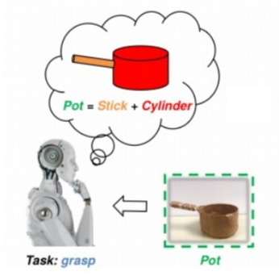
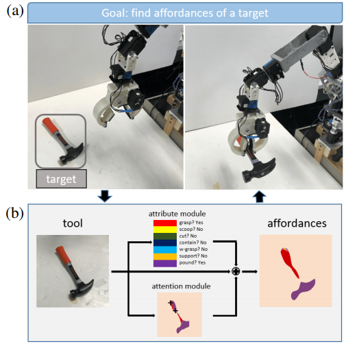
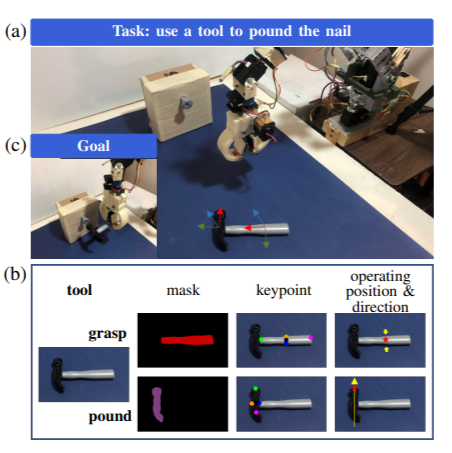
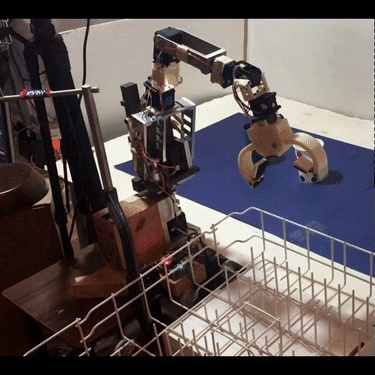
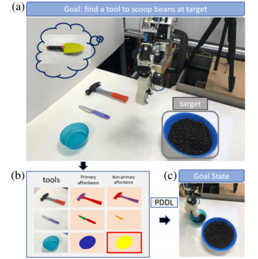
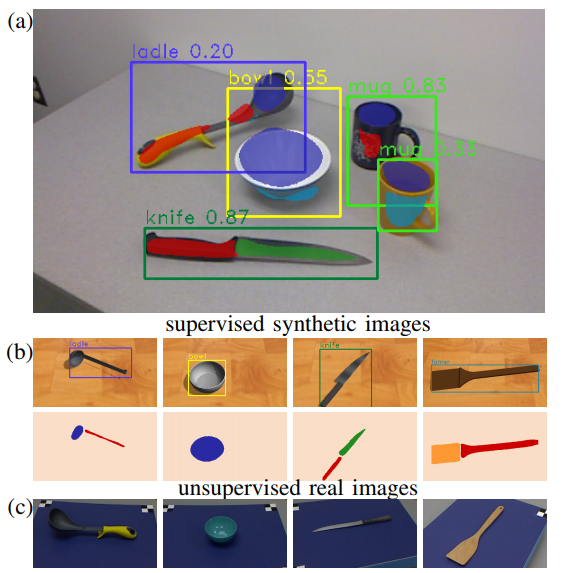
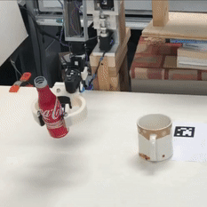
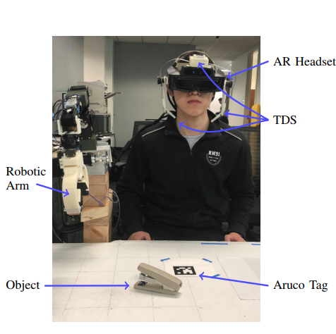
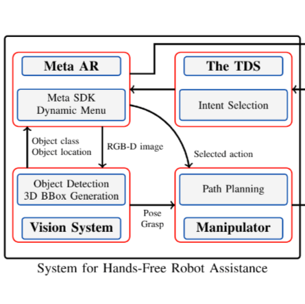

About
I am a Ph.D. student at Georgia Tech, advised by
Prof. Patricio A. Vela in
IVALab.
Prior to that, I received M.S. from ECE at Georgia Tech in 2018, and B.S. from ECE at Tongji University in 2016.
I enjoy working on multi-modal robotic manipulation with both visual and linguistic information, which allows assistive robotic agents to perform certain tasks in physical world. My research field lies at the intersection of robotics, computer vision and machine learning.
Publications
Please see my Google Scholar for complete publication list.











The Helping Hand: An Assitive Manipulation Framework Using Augmented Reality and Tongue-Drive Interfaces
IEEE EMBC 2018
Education

Georgia Institute of Technology
Master of Science
Electrical and Computer Engineering
Tongji University
Bachelor of Science
Electrical and Computer Engineering